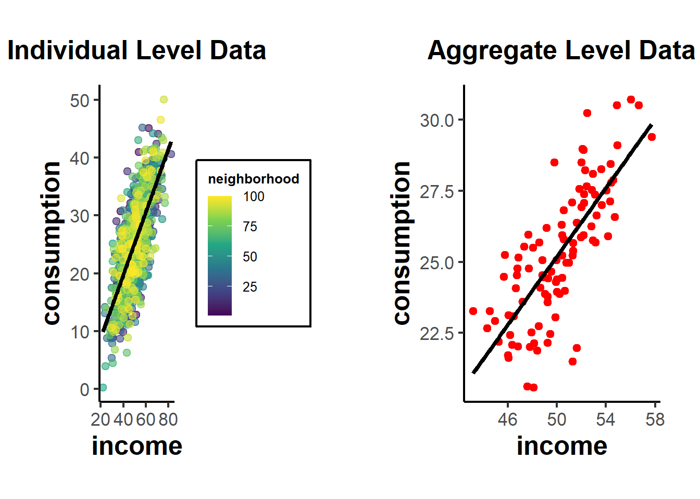
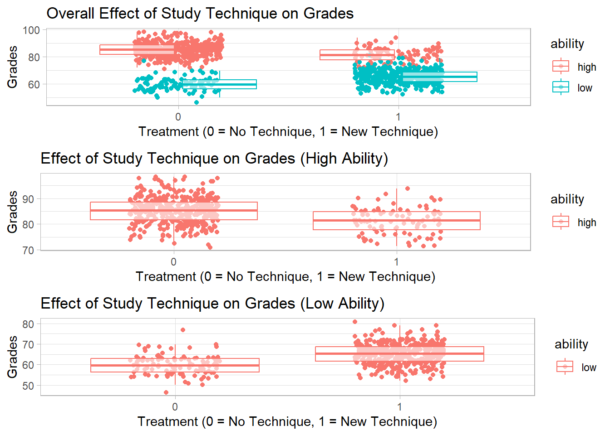
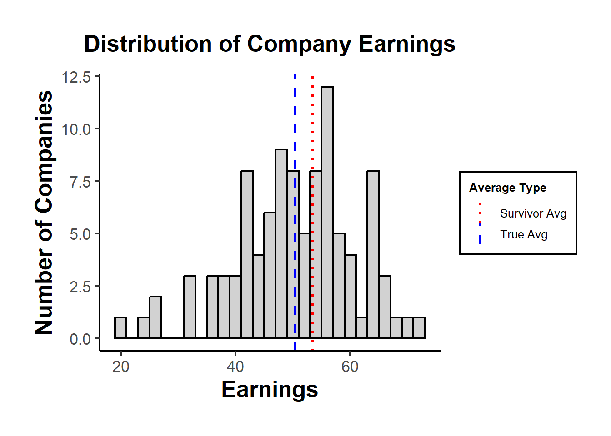
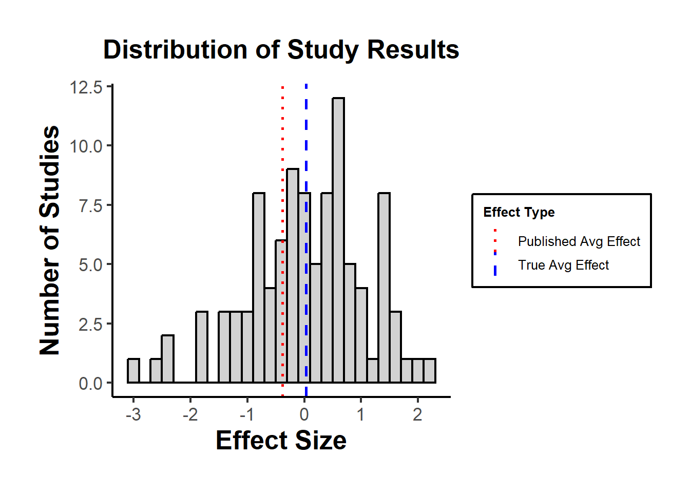
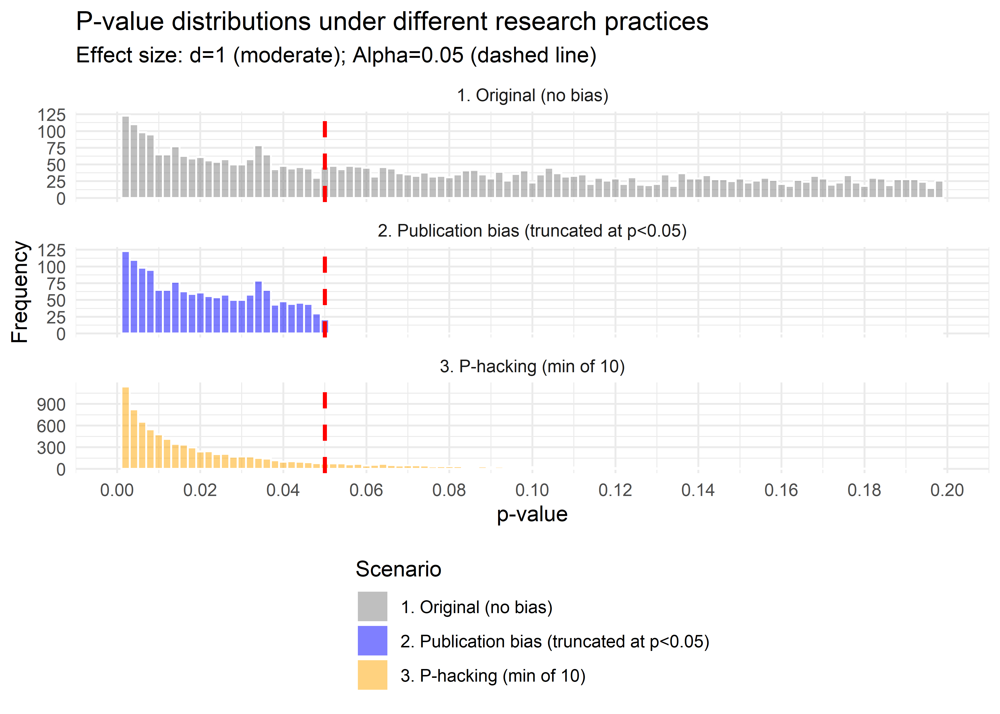
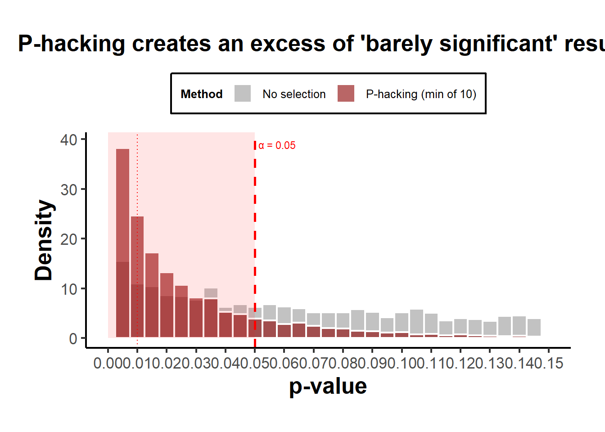
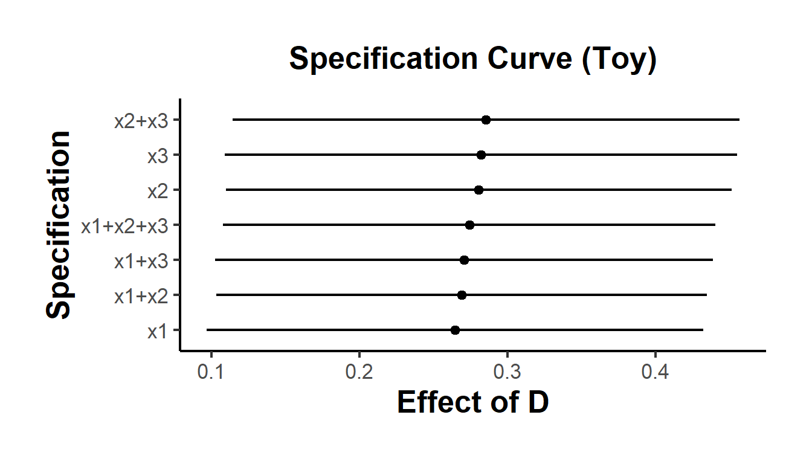

Chapter 49 Biases
Abstract. Bias rarely announces itself. This chapter catalogues the recurring ways an estimate departs systematically from the quantity it is meant to measure, and pairs each with the design or estimator that addresses it. It opens with aggregation bias and Simpson’s paradox, where a relationship computed on grouped data reverses the relationship holding within every group, then turns to contamination bias, which arises when several mutually exclusive treatments enter one specification alongside flexible controls. Survivorship, attrition, and recall bias are treated as variants of a single mechanism, conditioning on a selection variable that is itself a consequence of treatment or outcome, and regression to the mean is separated from genuine treatment response. The longest strand concerns the literature rather than the single study. Publication bias and p-hacking are developed through the distinct signatures each leaves in the distribution of reported test statistics, together with the detection methods built on those signatures, from caliper and excess significance tests through p-curve, p-uniform, z-curve, weight-function selection models, and robust Bayesian meta-analysis.
Keywords: Aggregation bias; Simpson’s paradox; Survivorship bias; Attrition bias; Publication bias; P-hacking
In econometrics, the main objective is often to uncover causal relationships. The biases that frustrate that objective come from at least three structurally distinct sources: how the data are generated (endogeneity, selection, measurement error), how they are collected (aggregation, survivorship, sample selection), and how the literature is curated (publication bias). Mixing these up makes a fix that helps in one setting useless in another, so it is worth keeping the categories straight even when the names overlap. This chapter focuses on biases that arise from the design of the study or the measurement of variables. Specification errors, multicollinearity, autocorrelation, and heteroskedasticity are properties of the estimation and are covered in the regression chapters in Part II. The list below organizes the biases this book has discussed alongside those treated here.
What we’ve covered so far (see Linear Regression and Endogeneity):
Endogeneity Bias: Occurs when an error term is correlated with an independent variable. This can be due to:
Simultaneity (or Reverse Causality): When the dependent variable simultaneously affects an independent variable. Happens when the dependent variable causes changes in the independent variable, leading to a two-way causation.
Omitted variables. Arises when a variable that affects the dependent variable and is correlated with an independent variable is left out of the regression.
Measurement error in the independent variable. Bias introduced when variables in a model are measured with error. If the error is in an independent variable and is classical (mean zero and uncorrelated with the true value), it typically biases the coefficient towards zero.
Sample Selection Bias: Arises when the sample is not randomly selected and the selection is related to the dependent variable. A classic example is the Heckman correction for labor market studies where participants self-select into the workforce.
Multicollinearity: Not a bias in the strictest sense, but in the presence of high multicollinearity (when independent variables are highly correlated), coefficient estimates can become unstable and standard errors large. This makes it hard to determine the individual effect of predictors on the dependent variable.
Specification Errors: Arise when the functional form of the model is incorrectly specified, e.g., omitting interaction terms or polynomial terms when they are needed.
Autocorrelation (or Serial Correlation): Occurs in time-series data when the error terms are correlated over time. This doesn’t cause bias in the coefficient estimates of OLS, but it can make standard errors biased, leading to incorrect inference.
Heteroskedasticity: Occurs when the variance of the error term is not constant across observations. Like autocorrelation, heteroskedasticity doesn’t bias the OLS estimates but can bias standard errors.
Aggregation Bias: Introduced when data are aggregated, and analysis is conducted at this aggregate level rather than the individual level.
Survivorship Bias (very much related to Sample Selection): Arises when the sample only includes “survivors” or those who “passed” a certain threshold. Common in finance where only funds or firms that “survive” are analyzed.
Publication Bias: Not a bias in econometric estimation per se, but relevant in the context of empirical studies. It refers to the tendency for journals to publish only significant or positive results, leading to an overrepresentation of such results in the literature.
49.1 Aggregation Bias
Aggregation bias, also known as ecological fallacy, refers to the error introduced when data are aggregated and an analysis is conducted at this aggregate level, rather than at the individual level. This can be especially problematic in econometrics, where analysts are often concerned with understanding individual behavior.
When the relationship between variables is different at the aggregate level than at the individual level, aggregation bias can result. The bias arises when inferences about individual behaviors are made based on aggregate data.
The mechanism behind aggregation bias is straightforward but easy to overlook: averaging discards information about within-group heterogeneity. If the slope of a relationship varies across subpopulations, then the slope estimated on group means is a weighted combination of within-group and between-group variation, and the weights need not equal those that recover the individual-level parameter. This is the same identification logic that motivates careful aggregation choices in panel and quasi-experimental work (see Section 35). Detection typically relies on comparing estimates across nested levels of aggregation, inspecting whether sign or magnitude flips when moving from individuals to groups, and checking whether group composition is itself correlated with the regressor of interest.
Example: Suppose we have data on individuals’ incomes and their personal consumption. At the individual level, it’s possible that as income rises, consumption also rises. However, when we aggregate the data to, say, a neighborhood level, neighborhoods with diverse income levels might all have similar average consumption due to other unobserved factors.
Step 1: Create individual level data
set.seed(123)
# Generate data for 1000 individuals
n <- 1000
income <- rnorm(n, mean = 50, sd = 10)
consumption <- 0.5 * income + rnorm(n, mean = 0, sd = 5)
# Individual level regression
individual_lm <- lm(consumption ~ income)
summary(individual_lm)
#>
#> Call:
#> lm(formula = consumption ~ income)
#>
#> Residuals:
#> Min 1Q Median 3Q Max
#> -15.1394 -3.4572 0.0213 3.5436 16.4557
#>
#> Coefficients:
#> Estimate Std. Error t value Pr(>|t|)
#> (Intercept) -1.99596 0.82085 -2.432 0.0152 *
#> income 0.54402 0.01605 33.888 <2e-16 ***
#> ---
#> Signif. codes: 0 '***' 0.001 '**' 0.01 '*' 0.05 '.' 0.1 ' ' 1
#>
#> Residual standard error: 5.032 on 998 degrees of freedom
#> Multiple R-squared: 0.535, Adjusted R-squared: 0.5346
#> F-statistic: 1148 on 1 and 998 DF, p-value: < 2.2e-16This would show a significant positive relationship between income and consumption.
Step 2: Aggregate data to ‘neighborhood’ level
# Assume 100 neighborhoods with 10 individuals each
n_neighborhoods <- 100
df <- data.frame(income, consumption)
df$neighborhood <- rep(1:n_neighborhoods, each = n / n_neighborhoods)
aggregate_data <- aggregate(. ~ neighborhood, data = df, FUN = mean)
# Aggregate level regression
aggregate_lm <- lm(consumption ~ income, data = aggregate_data)
summary(aggregate_lm)
#>
#> Call:
#> lm(formula = consumption ~ income, data = aggregate_data)
#>
#> Residuals:
#> Min 1Q Median 3Q Max
#> -4.4517 -0.9322 -0.0826 1.0556 3.5728
#>
#> Coefficients:
#> Estimate Std. Error t value Pr(>|t|)
#> (Intercept) -4.94338 2.60699 -1.896 0.0609 .
#> income 0.60278 0.05188 11.618 <2e-16 ***
#> ---
#> Signif. codes: 0 '***' 0.001 '**' 0.01 '*' 0.05 '.' 0.1 ' ' 1
#>
#> Residual standard error: 1.54 on 98 degrees of freedom
#> Multiple R-squared: 0.5794, Adjusted R-squared: 0.5751
#> F-statistic: 135 on 1 and 98 DF, p-value: < 2.2e-16If aggregation bias is present, the coefficient for income in the aggregate regression might be different from the coefficient in the individual regression, even if the individual relationship is significant and strong.
Figure 49.1 compares the income-consumption relationship at the individual level (with neighborhoods color-coded) against the same relationship after aggregating to the neighborhood mean.
library(ggplot2)
# Individual scatterplot
p1 <- ggplot(df, aes(x = income, y = consumption)) +
geom_point(aes(color = neighborhood), alpha = 0.6) +
scale_color_viridis_c() +
geom_smooth(method = "lm",
se = FALSE,
color = "black") +
labs(title = "Individual Level Data") +
causalverse::ama_theme()
# Aggregate scatterplot
p2 <- ggplot(aggregate_data, aes(x = income, y = consumption)) +
geom_point(color = "red") +
geom_smooth(method = "lm",
se = FALSE,
color = "black") +
labs(title = "Aggregate Level Data") +
causalverse::ama_theme()
# print(p1)
# print(p2)
gridExtra::grid.arrange(grobs = list(p1, p2), ncol = 2)
Figure 49.1: Income-consumption relationship at the individual level (left, with neighborhoods on a luminance-ordered color scale) against the relationship after aggregating to neighborhood means (right), illustrating how the slope can shift under aggregation.
From these plots, you can see the relationship at the individual level, with each neighborhood being colored differently in the first plot. The second plot shows the aggregate data, where each point now represents a whole neighborhood.
Direction of Bias: The direction of the aggregation bias isn’t predetermined. It depends on the underlying relationship and the data distribution. In some cases, aggregation might attenuate (reduce) a relationship, while in other cases, it might exaggerate it.
Relation to Other Biases: Aggregation bias is closely related to several other biases in econometrics:
Specification bias: If you don’t properly account for the hierarchical structure of your data (like individuals nested within neighborhoods), your model might be mis-specified, leading to biased estimates.
Omitted Variable Bias (see Endogeneity): When you aggregate data, you lose information. If the loss of this information results in omitting important predictors that are correlated with both the independent and dependent variables, it can introduce omitted variable bias.
49.1.1 Simpson’s Paradox
Simpson’s Paradox, also known as the Yule-Simpson effect, is a phenomenon in probability and statistics where a trend that appears in different groups of data disappears or reverses when the groups are combined. It’s a striking example of how aggregated data can sometimes provide a misleading representation of the actual situation.
49.1.1.1 Illustration of Simpson’s Paradox
Consider a hypothetical scenario involving two hospitals: Hospital A and Hospital B. We want to analyze the success rates of treatments at both hospitals. When we break the data down by the severity of the cases (i.e., minor cases vs. major cases):
Hospital A:
Minor cases: 95% success rate
Major cases: 80% success rate
Hospital B:
Minor cases: 90% success rate
Major cases: 85% success rate
From this breakdown, Hospital A appears to be better in treating both minor and major cases since it has a higher success rate in both categories.
However, let’s consider the overall success rates without considering case severity:
Hospital A: 83% overall success rate
Hospital B: 86% overall success rate
Suddenly, Hospital B seems better overall. This surprising reversal happens because the two hospitals might handle very different proportions of minor and major cases. For example, if Hospital A treats many more major cases (which have lower success rates) than Hospital B, it can drag down its overall success rate.
49.1.1.2 Causes
Simpson’s Paradox can arise due to:
A lurking or confounding variable that wasn’t initially considered (in our example, the severity of the medical cases).
Different group sizes, where one group might be much larger than the other, influencing the aggregate results.
49.1.1.3 Implications
Simpson’s Paradox highlights the dangers of interpreting aggregated data without considering potential underlying sub-group structures. It underscores the importance of disaggregating data and being aware of the context in which it’s analyzed.
49.1.1.4 Relation to Aggregation Bias
In the most extreme case, aggregation bias can reverse the coefficient sign of the relationship of interest (i.e., Simpson’s Paradox).
Example: Suppose we are studying the effect of a new study technique on student grades. We have two groups of students: those who used the new technique (treatment = 1) and those who did not (treatment = 0). We want to see if using the new study technique is related to higher grades.
Let’s assume grades are influenced by the starting ability of the students. Perhaps in our sample, many high-ability students didn’t use the new technique (because they felt they didn’t need it), while many low-ability students did.
Here’s a setup:
High-ability students tend to have high grades regardless of the technique.
The new technique has a positive effect on grades, but this is masked by the fact that many low-ability students use it.
set.seed(123)
# Generate data for 1000 students
n <- 1000
# 500 students are of high ability, 500 of low ability
ability <- c(rep("high", 500), rep("low", 500))
# High ability students are less likely to use the technique
treatment <-
ifelse(ability == "high", rbinom(500, 1, 0.2), rbinom(500, 1, 0.8))
# Grades are influenced by ability and treatment (new technique),
# but the treatment has opposite effects based on ability.
grades <-
ifelse(
ability == "high",
rnorm(500, mean = 85, sd = 5) + treatment * -3,
rnorm(500, mean = 60, sd = 5) + treatment * 5
)
df <- data.frame(ability, treatment, grades)
# Regression without considering ability
overall_lm <- lm(grades ~ factor(treatment), data = df)
summary(overall_lm)
#>
#> Call:
#> lm(formula = grades ~ factor(treatment), data = df)
#>
#> Residuals:
#> Min 1Q Median 3Q Max
#> -33.490 -4.729 0.986 6.368 25.607
#>
#> Coefficients:
#> Estimate Std. Error t value Pr(>|t|)
#> (Intercept) 80.0133 0.4373 183.0 <2e-16 ***
#> factor(treatment)1 -11.7461 0.6248 -18.8 <2e-16 ***
#> ---
#> Signif. codes: 0 '***' 0.001 '**' 0.01 '*' 0.05 '.' 0.1 ' ' 1
#>
#> Residual standard error: 9.877 on 998 degrees of freedom
#> Multiple R-squared: 0.2615, Adjusted R-squared: 0.2608
#> F-statistic: 353.5 on 1 and 998 DF, p-value: < 2.2e-16
# Regression within ability groups
high_ability_lm <-
lm(grades ~ factor(treatment), data = df[df$ability == "high",])
low_ability_lm <-
lm(grades ~ factor(treatment), data = df[df$ability == "low",])
summary(high_ability_lm)
#>
#> Call:
#> lm(formula = grades ~ factor(treatment), data = df[df$ability ==
#> "high", ])
#>
#> Residuals:
#> Min 1Q Median 3Q Max
#> -14.2156 -3.4813 0.1186 3.4952 13.2919
#>
#> Coefficients:
#> Estimate Std. Error t value Pr(>|t|)
#> (Intercept) 85.1667 0.2504 340.088 < 2e-16 ***
#> factor(treatment)1 -3.9489 0.5776 -6.837 2.37e-11 ***
#> ---
#> Signif. codes: 0 '***' 0.001 '**' 0.01 '*' 0.05 '.' 0.1 ' ' 1
#>
#> Residual standard error: 5.046 on 498 degrees of freedom
#> Multiple R-squared: 0.08581, Adjusted R-squared: 0.08398
#> F-statistic: 46.75 on 1 and 498 DF, p-value: 2.373e-11
summary(low_ability_lm)
#>
#> Call:
#> lm(formula = grades ~ factor(treatment), data = df[df$ability ==
#> "low", ])
#>
#> Residuals:
#> Min 1Q Median 3Q Max
#> -13.3717 -3.5413 0.1097 3.3531 17.0568
#>
#> Coefficients:
#> Estimate Std. Error t value Pr(>|t|)
#> (Intercept) 59.8950 0.4871 122.956 <2e-16 ***
#> factor(treatment)1 5.2979 0.5474 9.679 <2e-16 ***
#> ---
#> Signif. codes: 0 '***' 0.001 '**' 0.01 '*' 0.05 '.' 0.1 ' ' 1
#>
#> Residual standard error: 4.968 on 498 degrees of freedom
#> Multiple R-squared: 0.1583, Adjusted R-squared: 0.1566
#> F-statistic: 93.68 on 1 and 498 DF, p-value: < 2.2e-16From this simulation:
The
overall_lmmight show that the new study technique is associated with lower grades (negative coefficient), because many of the high-ability students (who naturally have high grades) did not use it.The
high_ability_lmwill likely show that high-ability students who used the technique had slightly lower grades than high-ability students who didn’t.The
low_ability_lmwill likely show that low-ability students who used the technique had much higher grades than low-ability students who didn’t.
This is a classic example of Simpson’s Paradox: within each ability group, the technique appears beneficial, but when data is aggregated, the effect seems negative because of the distribution of the technique across ability groups.
Figure 49.2 shows the treatment-grade relationship pooled across the full sample alongside the same relationship within the high-ability and low-ability subgroups, illustrating Simpson’s paradox.
library(ggplot2)
# Scatterplot for overall data
p1 <-
ggplot(df, aes(
x = factor(treatment),
y = grades,
color = ability
)) +
geom_jitter(width = 0.2, height = 0) +
geom_boxplot(alpha = 0.6, outlier.shape = NA) +
labs(title = "Overall Effect of Study Technique on Grades",
x = "Treatment (0 = No Technique, 1 = New Technique)",
y = "Grades")
# Scatterplot for high-ability students
p2 <-
ggplot(df[df$ability == "high", ], aes(
x = factor(treatment),
y = grades,
color = ability
)) +
geom_jitter(width = 0.2, height = 0) +
geom_boxplot(alpha = 0.6, outlier.shape = NA) +
labs(title = "Effect of Study Technique on Grades (High Ability)",
x = "Treatment (0 = No Technique, 1 = New Technique)",
y = "Grades")
# Scatterplot for low-ability students
p3 <-
ggplot(df[df$ability == "low", ], aes(
x = factor(treatment),
y = grades,
color = ability
)) +
geom_jitter(width = 0.2, height = 0) +
geom_boxplot(alpha = 0.6, outlier.shape = NA) +
labs(title = "Effect of Study Technique on Grades (Low Ability)",
x = "Treatment (0 = No Technique, 1 = New Technique)",
y = "Grades")
# print(p1)
# print(p2)
# print(p3)
gridExtra::grid.arrange(grobs = list(p1, p2, p3), ncol = 1)
Figure 49.2: Simpson’s paradox illustration: treatment-grade relationship in the pooled sample (top) reverses sign when stratified by student ability into high-ability (middle) and low-ability (bottom) subgroups.
49.2 Contamination Bias
Contamination bias is a relatively recent label for an old problem in regression-based causal inference: when several mutually exclusive treatments enter the same specification alongside flexible controls, the coefficient on any one treatment is generally not a clean average of that treatment’s own effect. Instead, it picks up weighted contrasts of the other treatments’ effects, with weights that depend on the propensity-score geometry rather than on substantive theory. The problem is closely related to the negative-weighting concerns that motivate modern staggered estimators (Section 39.14) discussed under Difference-in-Differences, and it shares its root cause with the omitted-variable problem (Section 48.1.5) and with selection on observables (Section 44.10): the implicit comparison group is not what the analyst thinks it is.
The mechanism is easiest to see with a worked sketch. Suppose three mutually exclusive treatment arms \(D_1, D_2, D_3\) are entered as dummies in a single regression with a rich set of controls \(X\). The OLS coefficient on \(D_1\) does not isolate the effect of arm 1 versus a clean baseline. It is a weighted average that includes negatively signed contributions from the heterogeneous effects of \(D_2\) and \(D_3\) in strata where those treatments are common. When effect heterogeneity lines up with the propensity score in the wrong direction, the resulting estimate can be attenuated, inflated, or even sign-flipped relative to the true average effect within arm 1. Goldsmith-Pinkham et al. (2022) formalize this: regressions with multiple treatments and flexible controls often fail to estimate convex averages of heterogeneous treatment effects, with the residualized treatment indicators inducing non-convex weights on the other arms’ effects.
The structural parallel to staggered DiD is direct. In both cases, a single regression coefficient is implicitly aggregating across heterogeneous comparison contrasts using weights chosen by the regression machinery rather than by the analyst. In staggered DiD, the contaminating contrasts come from already-treated units serving as controls for later-treated units. In multi-arm regressions, they come from the other arms’ treatment effects bleeding into the focal coefficient. The fix in both literatures has the same shape: target convex combinations of own-effect contrasts directly, rather than backing them out of a pooled OLS specification.
Detection is largely diagnostic. Practitioners can inspect the implied regression weights on each treatment-by-stratum cell and check whether they are everywhere positive, flag specifications where some weights are large and negative, and compare the linear specification to estimators that target convex averages directly, such as arm-by-arm matching, separate ATE estimators per arm, or explicitly weighted estimators. Observational designs with highly variable propensity scores tend to display larger contamination than experiments, because randomization stabilizes the weights and shrinks the residualized regressors toward orthogonality with the other arms.
The remedy is to abandon the pooled multi-arm OLS specification when the goal is an own-effect estimate. Goldsmith-Pinkham et al. (2022) propose three alternative estimators that recover convex combinations of own-treatment effects: a one-treatment-at-a-time approach, a stratification-based estimator, and an interacted regression that explicitly models the heterogeneity. They report substantial contamination in observational studies and a much smaller footprint in experimental ones, again because randomization disciplines the propensity-score variation that drives the bias.
The practical takeaway is conservative: when the design has multiple mutually exclusive treatment arms, do not read coefficients on the arm dummies in a pooled flexible-controls regression as own-effect averages. Estimate one arm at a time against a common baseline, or use a method that explicitly targets the convex average of interest.
49.3 Survivorship Bias
Survivorship bias refers to the logical error of concentrating on the entities that have made it past some selection process and overlooking those that didn’t, typically because of a lack of visibility. This can skew results and lead to overly optimistic conclusions.
Mechanically, survivorship bias is a special case of conditioning on a post-treatment selection variable. When the probability of appearing in the analysis sample depends on the outcome itself, or on unobservables that drive the outcome, the conditional distribution observed in the data is a non-random slice of the population. This is the same structural problem flagged under the conditional ignorability assumption (Section 35.5.2) and the overlap requirement (Section 35.5.3): the comparison set has been silently truncated. Detection typically begins with an explicit accounting of the selection process. How were units recruited into the dataset? What attrition or de-listing rules apply? Comparing summary statistics for the analysis sample to a reference population, when one is available, often reveals the gap. Sensitivity analyses that posit plausible distributions for the missing units, and bounding exercises that flip the worst-case assumption, are routine.
Example: If you were to analyze the success of companies based only on the ones that are still in business today, you’d miss out on the insights from all those that failed. This would give you a distorted view of what makes a successful company, as you wouldn’t account for all those that had those same attributes but didn’t succeed.
49.3.1 Relation to Other Biases
Sample Selection Bias: Survivorship bias is a specific form of sample selection bias. While survivorship bias focuses on entities that “survive”, sample selection bias broadly deals with any non-random sample.
Confirmation Bias: Survivorship bias can reinforce confirmation bias. By only looking at the “winners”, we might confirm our existing beliefs about what leads to success, ignoring evidence to the contrary from those that didn’t survive.
set.seed(42)
# Generating data for 100 companies
n <- 100
# Randomly generate earnings; assume true average earnings is 50
earnings <- rnorm(n, mean = 50, sd = 10)
# Threshold for bankruptcy
threshold <- 40
# Only companies with earnings above the threshold "survive"
survivor_earnings <- earnings[earnings > threshold]
# Average earnings for all companies vs. survivors
true_avg <- mean(earnings)
survivor_avg <- mean(survivor_earnings)
true_avg
#> [1] 50.32515
survivor_avg
#> [1] 53.3898Using a histogram to visualize the distribution of earnings, highlighting the “survivors”.
Figure 49.3 shows the simulated earnings distribution across all firms with vertical lines at the population mean and the survivor-only mean, illustrating the upward shift induced by survivorship.
library(ggplot2)
df <- data.frame(earnings)
p <- ggplot(df, aes(x = earnings)) +
geom_histogram(
binwidth = 2,
fill = "grey",
color = "black",
alpha = 0.7
) +
geom_vline(aes(xintercept = true_avg, color = "True Avg",
linetype = "True Avg"),
size = 1) +
geom_vline(
aes(xintercept = survivor_avg, color = "Survivor Avg",
linetype = "Survivor Avg"),
size = 1
) +
scale_color_manual(values = c("True Avg" = "blue", "Survivor Avg" = "red"),
name = "Average Type") +
scale_linetype_manual(values = c("True Avg" = "dashed",
"Survivor Avg" = "dotted"),
name = "Average Type") +
labs(title = "Distribution of Company Earnings",
x = "Earnings",
y = "Number of Companies") +
causalverse::ama_theme()
print(p)
Figure 49.3: Histogram of simulated company earnings with vertical lines at the population mean (true average) and the survivor-only mean, illustrating the upward bias when only firms above the bankruptcy threshold are observed.
In the plot, the “True Avg” might be lower than the “Survivor Avg”, indicating that by only looking at the survivors, we overestimate the average earnings.
49.3.2 Remedies
Awareness: Recognizing the potential for survivorship bias is the first step.
Inclusive Data Collection: Wherever possible, try to include data from entities that didn’t “survive” in your sample.
Statistical Techniques: In cases where the missing data is inherent, methods like Heckman’s two-step procedure can be used to correct for sample selection bias.
External Data Sources: Sometimes, complementary datasets can provide insights into the missing “non-survivors”.
Sensitivity Analysis: Test how sensitive your results are to assumptions about the non-survivors.
49.4 Attrition Bias
Attrition bias arises in longitudinal or panel studies when units drop out of the sample non-randomly — and in particular when dropout is correlated with the outcome or with treatment status. Even a randomized experiment with perfect baseline balance will yield biased treatment-effect estimates if, for example, sicker patients in the control arm are more likely to be lost to follow-up than sicker patients in the treatment arm.
The conceptual link to other selection-style problems is direct. Random assignment guarantees baseline ignorability, but it offers no protection once units begin selecting themselves out of follow-up. From that point forward the analyst is in the world of selection on unobservables (Section 44.11) and endogenous sample selection (Section 48.3). Detection typically combines a comparison of baseline characteristics for completers versus dropouts, a test of differential attrition rates across treatment arms, and bounding exercises that ask how extreme the missing outcomes would have to be to overturn the headline estimate. When attrition is heavy or differential, results from quasi-experimental designs (Section 35) should be reported alongside their corresponding robustness checks (Section 35.3).
Example: In a multi-year clinical trial of a weight-loss drug, participants who fail to lose weight are more likely to disengage and drop out. If dropout is heavier in the placebo arm, the per-protocol estimate overstates the drug’s effect because the remaining placebo subjects are atypically successful.
Common settings: longitudinal panel surveys (PSID, NLSY, HRS), randomized field experiments with multi-wave follow-ups, cohort studies in epidemiology, customer-retention analytics, and online-experiment platforms where users abandon the funnel before the outcome is recorded.
49.4.1 Standard remediations
- Inverse-probability-of-attrition weighting (IPAW): Model the probability of remaining in the sample at each wave conditional on baseline covariates, then up-weight retained observations by the inverse of their estimated retention probability. Valid under the missing-at-random given observables assumption.
- Lee bounds (Lee 2009): Construct sharp non-parametric bounds on the treatment effect for always-responders by trimming the upper or lower tail of the over-represented arm by the differential attrition rate. Robust to arbitrary selection on unobservables, at the cost of width.
- Selection / Heckman models: When a credible exclusion restriction is available, jointly model the dropout process and the outcome.
- Sensitivity analyses: Re-run primary estimates under best-case / worst-case imputation of dropouts (e.g., last-observation-carried-forward, or tipping-point analyses).
Key Takeaway: Attrition bias is selection bias induced post-randomization. Pre-registered IPAW or Lee bounds, plus tabulated baseline characteristics of dropouts vs. completers, are the de facto reporting standard.
49.5 Recall Bias
Recall bias is a form of measurement error that arises when the accuracy or completeness of a respondent’s memory is systematically related to their outcome or exposure status. Unlike classical, mean-zero measurement error — which generally attenuates regression coefficients — recall bias is differential, meaning it shifts coefficients in unpredictable directions and can manufacture spurious associations.
The departure from classical measurement error (Section 48.1.1) is what makes recall bias particularly hazardous. Classical error attaches noise that is independent of the truth and of group status, so the standard intuition that errors-in-variables attenuate slopes applies. Differential recall, by contrast, is correlated with the outcome itself, and this correlation can either inflate or deflate associations and can even reverse their sign. The same instrumental-variable and proxy-variable strategies used for handling endogeneity (Section 43) can sometimes be repurposed when an exogenous source of variation in reporting accuracy is available. Detection usually proceeds by comparing self-reported quantities to objective benchmarks on a calibration subsample, by stratifying error rates by case/control or treatment/control status, and by examining whether the implied error structure is plausibly mean-zero conditional on group.
Example: In a case-control study of diet and cancer, cancer patients (cases) may scrutinize their pre-diagnosis diet more carefully than healthy controls, recalling specific high-risk items that controls forget. The retrospective association between diet and cancer is then exaggerated, not because of true causation but because recall is correlated with case status.
Common settings: retrospective epidemiological case-control studies, customer-survey self-reports of past purchase behavior, retrospective wage and labor-history surveys, post-event evaluations of policy or marketing exposures, and any setting where a salient outcome makes prior events more “rememberable” for one group.
49.5.1 Standard remediations
- Contemporaneous logging: Replace retrospective self-report with prospectively collected administrative records, transaction logs, or wearable-sensor data — removing the memory channel entirely.
- Biomarker or behavioral triangulation: Pair self-reports with an objective measure (e.g., serum nicotine for smoking, scanner data for purchases, server-side click logs for ad exposure) and treat the discrepancy as a measurement-error model.
- Blinded data collection: Where retrospective questions are unavoidable, blind interviewers (and ideally respondents) to the case/control status to remove differential probing.
- Validation substudies: Calibrate self-report instruments against a gold-standard subsample and apply regression calibration or simulation-extrapolation (SIMEX).
Key Takeaway: Recall bias is most dangerous when it is differential, because it breaks the standard “attenuation” intuition for measurement error. Whenever feasible, prefer contemporaneous administrative or sensor-based records to retrospective self-report.
49.6 Regression to the Mean
Regression to the mean (RTM) describes the statistical phenomenon by which extreme observations on a noisy measurement tend, on re-measurement, to lie closer to the population mean. It is not a causal effect of any intervention — it is an artifact of selecting on a noisy realization. Mistaking RTM for a treatment effect is one of the most common applied-statistics errors in pre/post designs.
Example: A school district enrolls the worst-performing 10% of students from last year’s standardized test in a tutoring program. Even with a completely ineffective tutor, those students will, on average, score higher this year — their selection was driven partly by transient bad-day noise, which does not repeat. Naively comparing pre- to post-test scores credits the tutor for an effect that is mechanical.
Common settings: selection of units for an intervention based on extreme baseline values (e.g., highest-cost patients, lowest-revenue stores, highest-error regions), pre/post analyses without a comparison group, sports performance (“rookie of the year” sophomore slumps), and managerial evaluation systems that promote on the basis of one extreme review.
49.6.1 Standard remediations
- Comparison-group designs: Include an untreated comparison group selected on the same extreme criterion. RTM operates equally on both groups, so the difference in changes (a difference-in-differences contrast) nets it out.
- Avoid selection on the pre-test: Where possible, randomize within the eligible pool rather than treating the extreme tail, or pre-specify entry on a time-invariant characteristic instead of a noisy realization.
- Use multiple baseline measurements: Average several pre-period observations to reduce the noise variance that fuels RTM, then condition on the average rather than a single realization.
- Model the measurement process explicitly: A simple errors-in-variables or random-effects model that separates true score from noise will recover an RTM-corrected expected post-period value.
Key Takeaway: Whenever units are selected because they were extreme, expect movement toward the mean in the next period — whether or not anything was done to them. Always benchmark against a similarly-selected control group, and never report a pre/post change as a treatment effect when units were chosen on the pre-period value.
49.7 Publication Bias
Publication bias occurs when the results of studies influence the likelihood of their being published. Typically, studies with significant, positive, or sensational results are more likely to be published than those with non-significant or negative results. This can skew the perceived effectiveness or results when researchers conduct meta-analyses or literature reviews, leading them to draw inaccurate conclusions.
Publication bias sits at a different layer of the inference pipeline than the data-generating biases catalogued elsewhere in this chapter. It does not corrupt any single study’s identification strategy. It corrupts the evidence base that downstream meta-analysts and policymakers rely on. The mechanism is a filter on top of an otherwise honest research process: studies whose realized z-statistic clears the conventional threshold are likelier to enter the published record, so the published distribution of effect sizes is right-shifted relative to the underlying truth. This is the same selection logic that creates survivorship bias (Section 49.3), with the published literature playing the role of “survivors” and the file drawer playing the role of the missing failures. Detection methods exploit predictable features of the unfiltered distribution, especially the relationship between effect size and standard error in a funnel plot, the shape of the p-value distribution near the significance threshold, and the rate of just-barely-significant z-statistics relative to what sampling theory implies. Several of these diagnostics are developed in detail in the section on p-Hacking that follows.
Example: Imagine pharmaceutical research. If 10 studies are done on a new drug, and only 2 show a positive effect while 8 show no effect, but only the 2 positive studies get published, a later review of the literature might erroneously conclude the drug is effective.
49.7.1 Relation to Other Biases
Selection Bias: Publication bias is a form of selection bias, where the selection (publication in this case) isn’t random but based on the results of the study.
Confirmation Bias: Like survivorship bias, publication bias can reinforce confirmation bias. Researchers might only find and cite studies that confirm their beliefs, overlooking the unpublished studies that might contradict them.
Let’s simulate an experiment on a new treatment. We’ll assume that the treatment has no effect, but due to random variation, some studies will show significant positive or negative effects.
set.seed(42)
# Number of studies
n <- 100
# Assuming no real effect (effect size = 0)
true_effect <- 0
# Random variation in results
results <- rnorm(n, mean = true_effect, sd = 1)
# Only "significant" results get published
# (arbitrarily defining significant as abs(effect) > 1.5)
published_results <- results[abs(results) > 1.5]
# Average effect for all studies vs. published studies
true_avg_effect <- mean(results)
published_avg_effect <- mean(published_results)
true_avg_effect
#> [1] 0.03251482
published_avg_effect
#> [1] -0.3819601Using a histogram to visualize the distribution of study results, highlighting the “published” studies.
Figure 49.4 plots the simulated distribution of study results under no true effect, with vertical lines at the unrestricted mean and at the mean among only-the-significant published subset.
library(ggplot2)
df <- data.frame(results)
p <- ggplot(df, aes(x = results)) +
geom_histogram(
binwidth = 0.2,
fill = "grey",
color = "black",
alpha = 0.7
) +
geom_vline(
aes(xintercept = true_avg_effect,
color = "True Avg Effect",
linetype = "True Avg Effect"),
size = 1
) +
geom_vline(
aes(xintercept = published_avg_effect,
color = "Published Avg Effect",
linetype = "Published Avg Effect"),
size = 1
) +
scale_color_manual(
values = c(
"True Avg Effect" = "blue",
"Published Avg Effect" = "red"
),
name = "Effect Type"
) +
scale_linetype_manual(
values = c(
"True Avg Effect" = "dashed",
"Published Avg Effect" = "dotted"
),
name = "Effect Type"
) +
labs(title = "Distribution of Study Results",
x = "Effect Size",
y = "Number of Studies") +
causalverse::ama_theme()
print(p)
Figure 49.4: Histogram of simulated study effect sizes under no true effect, with vertical lines at the full-sample mean (true average) and at the mean among the published-only subset whose absolute effect exceeds 1.5.
The plot might show that the “True Avg Effect” is around zero, while the “Published Avg Effect” is likely higher or lower, depending on which studies happen to have significant results in the simulation.
49.7.2 Remedies
Awareness: Understand and accept that publication bias exists, especially when conducting literature reviews or meta-analyses.
Study Registries: Encourage the use of study registries where researchers register their studies before they start. This way, one can see all initiated studies, not just the published ones.
Publish All Results: Journals and researchers should make an effort to publish negative or null results. Some journals, known as “null result journals”, specialize in this.
Funnel Plots and Egger’s Test: In meta-analyses, these are methods to visually and statistically detect publication bias.
Use of Preprints: Promote the use of preprint servers where researchers can upload studies before they’re peer-reviewed, ensuring that results are available regardless of eventual publication status.
p-curve analysis: addresses publication bias and p-hacking by analyzing the distribution of p-values below 0.05 in research studies. It posits that a right-skewed distribution of these p-values indicates a true effect, whereas a left-skewed distribution suggests p-hacking and no true underlying effect. The method includes a “half-curve” test to counteract extensive p-hacking Simonsohn et al. (2015).
49.8 p-Hacking
Any dataset, questioned persistently enough, will eventually agree with you.
The work of this section is noticing when that is what happened.
This chapter reviews the major statistical tools developed to diagnose, detect, and adjust for p-hacking and related selective-reporting practices. We focus on the mathematical foundations, assumptions, and inferential targets of each method, map the different “schools of thought”, and summarize the simulation evidence and the spirited debates. This section also offers practical advice for applied researchers.
We separate three concepts that are often conflated:
- p-hacking: data-dependent analysis choices (optional stopping, selective covariates, flexible transformations, subgrouping, selective outcomes/specifications) aimed at achieving \(p \le \alpha\).
- publication bias (a.k.a. selective publication): the file-drawer problem (journals, reviewers, or authors preferentially publish significant or “exciting” results).
- QRPs (questionable research practices): a broader umbrella that includes p-hacking and HARKing (hypothesizing after results are known).
This section is about detection (diagnosis) and adjustment (bias correction) for these phenomena in literatures and meta-analyses. We aim for methods that either (i) test for their presence, (ii) quantify their magnitude, or (iii) produce bias-adjusted effect estimates and uncertainty statements.
49.8.1 Theoretical Signatures of p-Hacking and Selection
49.8.1.1 p-values under the null and under alternatives
Let \(Z \sim \mathcal{N}(\mu,1)\) denote a \(z\)-statistic for a one-sided test, where \(\mu\) is the noncentrality: \(\mu = \theta / \mathrm{SE}\) for true effect \(\theta\) and known standard error \(\mathrm{SE}\). The one-sided \(p\)-value is \(P = 1 - \Phi(Z)\). A change of variables yields the density of \(P\) under \(\mu\):
\[ f(p \mid \mu) = \frac{\phi(\Phi^{-1}(1-p) - \mu)}{\phi(\Phi^{-1}(1-p))} = \exp\big\{\mu z - \tfrac{1}{2}\mu^2\big\}, \quad z = \Phi^{-1}(1-p), \quad p \in (0,1). \]
Under the null (\(\mu=0\)), \(f(p\mid 0) \equiv 1\) (Uniform\((0,1)\)).
Under true effects (\(\mu \ne 0\)), the density decreases in \(p\): small \(p\)’s are more likely.
For two-sided tests, \(P = 2[1-\Phi(|Z|)]\), and the density becomes a mixture due to \(|Z|\) 1
49.8.1.2 Selection on statistical significance
Let \(S \in \{0,1\}\) indicate publication/reporting. Suppose selection depends on the p-value via a selection function \(s(p) = \Pr(S=1\mid p)\). The observed \(p\)-density is
\[ f_{\mathrm{obs}}(p) \propto f(p \mid \mu) s(p). \]
where \(f(p\mid \mu)\) is the theoretical distribution of \(p\)-values given a true effect \(\mu\) and \(s(p)\) is the probability that a result with \(p\) is reported or published.2
This function results in two related phenomena (both distort what we see in the published literature), but they’re conceptually distinct and represent two polar mechanisms of how the distortion arises. Mathematically, they correspond to different shapes of the selection function \(s(p)\).
Two polar cases:
- Pure publication bias: \(s(p)=\mathbb{1}\{p\le \alpha\}\) (hard threshold).
- p-hacking: \(s(p)\) is smoother or has spikes (e.g., bunching just below \(\alpha\), or data-dependent steps that inflate the mass in \((0,\alpha]\), especially near \(\alpha\)).
In the pure publication bias (the “hard threshold”) case
Mechanism: Results are analyzed honestly, but only significant findings are published.
Mathematically: The selection function is a step function,
\[ s(p) = \begin{cases} 1, & p \le \alpha,\\[4pt] 0, & p > \alpha, \end{cases} \]
or sometimes a monotone increasing function that jumps at \(p=\alpha\).
Every result above the conventional significance threshold is suppressed, which is the infamous file drawer problem (Rosenthal 1979; Iyengar and Greenhouse 1988).Consequence: The literature includes only those tests that crossed the line, but the p-values themselves were generated correctly under valid statistical procedures.
Thus, all distortion happens after data analysis.
In the p-hacking (the “smooth or spiked selection”) case
Mechanism: The researcher manipulates the analysis itself (e.g.,, tries multiple specifications, adds/drops covariates, peeks at data, etc.) until a significant p emerges.
Every result is “eligible” for publication, but the reported \(p\) has been manufactured by analytical flexibility.Mathematically: The selection function \(s(p)\) is not a hard cutoff but smoothly increasing or spiky near \(\alpha\):
\[ s(p) \text{ is large for } p \lesssim \alpha, \text{ small for } p > \alpha. \]
Researchers disproportionately generate or select p-values just below .05, producing bunching in \((0.045, 0.05]\). It’s a signature seen empirically in economics (Brodeur et al. 2016) and psychology (Masicampo and Lalande 2012).
Consequence: The literature is distorted within the analysis process, even if all results are published.
It inflates the frequency of borderline significant p-values and biases estimated effects upward.
They represent extreme ends of a continuum of selective processes (Table 49.1)
| Dimension | Pure publication bias | Pure p-hacking |
|---|---|---|
| Timing of distortion | After analysis (in publication) | During analysis (in researcher’s choices) |
| Selection function \(s(p)\) | Hard threshold (step at \(\alpha\)) | Smooth, often spiked near \(\alpha\) |
| Who applies selection | Editors, reviewers, publication process | Researchers themselves |
| What’s hidden | Nonsignificant studies | Nonsignificant analyses within studies |
| Empirical pattern | Missing mass for \(p>\alpha\) | Excess mass just below \(\alpha\) |
In practice, most literatures sit somewhere in between, where both the file drawer (publication bias) and data-contingent choices (p-hacking) operate simultaneously.
That’s why comprehensive models of bias (e.g., Andrews and Kasy (2019), Vevea and Hedges (1995), Bartoš and Schimmack (2022)) allow \(s(p)\) to take flexible forms that include both extremes as special cases.
Publication bias hides results after they’re obtained.
p-hacking reshapes results before they’re reported.
They both distort the observable distribution of \(p\)-values, but they do so through opposite ends of the research process.
At the surface level, both processes produce similar observable patterns of published \(p\)-values:
- Right-skew among significant \(p\)’s because only (or mostly) small p’s appear: more mass near \(0\) than near \(\alpha\).
- Bunching just below \(\alpha\) (e.g., \(z\) near \(1.96\)) suggests manipulation or selection thresholds. In both cases, you’ll often see a cliff or spike just below the threshold.
- Funnel plot asymmetry: small studies show larger effects (or higher \(z\)) than large ones. Small studies (with larger SEs) are more likely to pass the significance gate if they overestimate the effect, producing a one-sided funnel.
- Excess significance: more significant results than expected given estimated power. The proportion of significant results exceeds what would be expected given the median power of published studies.
From a purely descriptive point of view (e.g., looking only at a histogram of published p-values), you cannot tell them apart.
That’s why analysts call them observationally confounded mechanisms: different generative processes, same marginal distributions.
The distinction lies in where the distortion occurs in the data-generation pipeline (Figures 49.5 and 49.6)
- Pure publication bias
The underlying analysis is honest: each study reports one \(p\) generated from the correct \(f(p\mid \mu)\).
But the publication process truncates the distribution: only \(p \le \alpha\) appear.
Mathematically, the observed density is
\[ f_{\mathrm{obs}}(p) = \frac{f(p\mid \mu) \mathbb{1}\{p \le \alpha\}}{\Pr(p \le \alpha\mid \mu)}. \]
Key signature: a sharp truncation, literally no data above \(\alpha\). There’s no spike within \((0,\alpha)\), just absence beyond it.
- p-hacking
The distortion happens before the “publication filter,” during the analysis. Researchers keep sampling, transforming, or subgrouping until they find \(p\le\alpha\).
Each study’s reported \(p\) is the minimum over multiple draws \(p_1,\dots,p_m\) from the true \(f(p\mid\mu)\):
\[ P_{\text{hack}} = \min(P_1, \dots, P_m). \]
The resulting distribution is
\[ f_{\text{hack}}(p) = m [1 - F(p)]^{m-1} f(p), \]
which spikes near 0 when \(m\) is large, or piles up near \(\alpha\) if researchers stop only when reaching significance.
Key signature: not just truncation, but a smooth inflation near \(\alpha\), sometimes with a local mode or “bump” just below it.
set.seed(123)
# True effect small: mu = 1 (z ~ N(1,1))
simulate_p <- function(mu = 1,
m = 1,
alpha = 0.05,
n = 10000) {
z <- rnorm(n * m, mu, 1)
p <- 2 * (1 - pnorm(abs(z)))
if (m > 1) {
p <- matrix(p, n, m)
p <- apply(p, 1, min) # pick the smallest = p-hacking
}
return(p)
}
# Generate full distributions (don't truncate yet)
p_orig <-
simulate_p(mu = 1, m = 1) # original distribution
p_pub <-
p_orig[p_orig <= 0.05] # truncate to sigs (publication bias)
p_hack <-
simulate_p(mu = 1, m = 10) # p-hacking: 10 tries, keep min
# Create a more interpretative comparison
library(ggplot2)
library(dplyr)
# Compare three scenarios
df <- rbind(
data.frame(p = p_orig, type = "1. Original (no bias)"),
data.frame(p = c(p_pub, rep(
NA, length(p_orig) - length(p_pub)
)),
type = "2. Publication bias (truncated at p<0.05)"),
data.frame(p = p_hack, type = "3. P-hacking (min of 10)")
) %>%
filter(!is.na(p))# Focus on the critical region (0 to 0.2)
ggplot(df, aes(p, fill = type)) +
geom_histogram(
binwidth = 0.002,
position = "identity",
alpha = 0.5,
color = "white"
) +
geom_vline(
xintercept = 0.05,
linetype = "dashed",
linewidth = 1,
color = "red"
) +
scale_x_continuous(limits = c(0, 0.2), breaks = seq(0, 0.2, 0.02)) +
scale_fill_manual(values = c("gray50", "blue", "orange")) +
labs(
x = "p-value",
y = "Frequency",
title = "P-value distributions under different research practices",
subtitle = "Effect size: d=1 (moderate); Alpha=0.05 (dashed line)",
fill = "Scenario"
) +
# causalverse::ama_theme() +
theme_minimal() +
theme(legend.position = "bottom",
legend.direction = "vertical") +
facet_wrap( ~ type, ncol = 1, scales = "free_y")
Figure 49.5: Comparison of \(p\)-value distributions under truncation and \(p\)-hacking.
# Alternative: Show the pile-up more clearly
df2 <- rbind(
data.frame(p = p_orig, type = "No selection"),
data.frame(p = p_hack, type = "P-hacking (min of 10)")
)
ggplot(df2, aes(p, fill = type)) +
geom_histogram(
aes(y = after_stat(density)),
binwidth = 0.005,
position = "identity",
alpha = 0.6,
color = "white"
) +
geom_vline(
xintercept = 0.05,
linetype = "dashed",
linewidth = 1,
color = "red"
) +
geom_vline(
xintercept = 0.01,
linetype = "dotted",
linewidth = 0.5,
color = "red"
) +
scale_x_continuous(limits = c(0, 0.15), breaks = seq(0, 0.15, 0.01)) +
scale_fill_manual(values = c("gray60", "darkred")) +
annotate(
"text",
x = 0.05,
y = Inf,
label = "α = 0.05",
hjust = -0.1,
vjust = 2,
color = "red",
size = 3
) +
annotate(
"rect",
xmin = 0,
xmax = 0.05,
ymin = 0,
ymax = Inf,
alpha = 0.1,
fill = "red"
) +
labs(
x = "p-value",
y = "Density",
title = "P-hacking creates an excess of 'barely significant' results",
fill = "Method"
) +
# theme_minimal() +
causalverse::ama_theme() +
theme(legend.position = "top")
Figure 49.6: P-hacking distributions illustrating the pile-up effect just below \(p = 0.05\).
Interpretation:
- Both curves show an absence of \(p>0.05\), so both produce “only significant” results.
- The publication-bias case ends abruptly at 0.05 (a cliff).
- The p-hacking case has a bulge just below 0.05, the telltale “bunching” pattern seen in real literature (Brodeur et al. 2016).
Why this distinction matters
- If the mechanism is pure truncation, the bias can be corrected with selection models that model \(s(p)\) as a step function (Vevea and Hedges 1995).
- If the mechanism is smooth hacking, then the effective \(s(p)\) is continuous or even non-monotone, which these models may miss. Hence, newer approaches such as z-curve, p-curve, and nonparametric selection models Bartoš and Schimmack (2022) are more appropriate.
In practice, literatures exhibit both: authors p-hack to cross \(\alpha\), then journals favor those results, compounding bias. So although the observable patterns overlap, the mechanistic implications and statistical corrections differ (Table 49.2).
| Mechanism | When bias enters | Typical \(s(p)\) | Observable pattern | Distinguishable feature |
|---|---|---|---|---|
| Publication bias | After analysis (file drawer) | Step function at \(\alpha\) | Truncation at \(\alpha\) | Sharp cutoff, missing nonsignificant results |
| p-hacking | During analysis | Smooth/spiky near \(\alpha\) | Bunching below \(\alpha\) | Local spike or inflation near threshold |
Both yield “too many small p-values,” but p-hacking reshapes the distribution, while publication bias truncates it. That’s why, theoretically, they are modeled as polar cases, distinct endpoints of the same general selection framework.
49.8.2 Method Families
49.8.2.1 Descriptive diagnostics & caliper tests
Targets: patterns in \(p\)-histograms or \(z\)-densities suggesting manipulation.
- Caliper test around \(\alpha\): Compare counts just below vs. just above the significance threshold.
Let \(T\) be a \(z\)-statistic and \(c=1.96\) (two-sided \(\alpha=0.05\)). With a small bandwidth \(h>0\), define
\[ N_+ = \#\{i: T_i \in (c, c+h]\}, \quad N_- = \#\{i: T_i \in (c-h, c]\}. \]
Under continuity of the density at \(c\) and no manipulation, \(N_+\) and \(N_-\) should be similar. A binomial test (or local polynomial density test) assesses \(H_0: f_T(c^-) = f_T(c^+)\).
- Heaping near \(p=.05\): Excess in \((.045,.05]\) relative to \((.04,.045]\) (binning-based tests).
Pros: Simple, visual.
Cons: Sensitive to binning and heterogeneity, and can’t separate publication bias from p-hacking.
49.8.2.2 Excess significance tests
Ioannidis and Trikalinos (2007) -type logic: If study \(i\) has power \(\pi_i\) to detect a common effect \(\hat\theta\) at its \(\alpha_i\), then the expected number of significant results is \(E=\sum_i \pi_i\). Compare the observed \(O\) to \(E\) via a binomial (or Poisson-binomial) tail: \[ O \sim \text{Poisson-Binomial}(\pi_1,\ldots,\pi_k), \quad \text{test } \Pr(O \ge O_{\text{obs}} \mid \boldsymbol{\pi}). \] Pros: Uses study-level power.
Cons: Depends on the (possibly biased) common-effect estimate; heterogeneity complicates power computation.
49.8.2.3 Funnel asymmetry tests and meta-regression
Let \(y_i\) be estimated effects and \(s_i\) their standard errors.
Egger regression: \(z_i = y_i/s_i\). Fit \[ z_i = \beta_0 + \beta_1 \cdot \frac{1}{s_i} + \varepsilon_i, \quad \varepsilon_i \sim \mathcal{N}(0,\sigma^2). \] A nonzero intercept \(\beta_0\) indicates small-study effects (possibly selection).
PET-PEESE (precision-effect testing and precision-effect estimate with standard error): regress effect sizes on \(s_i\) or \(s_i^2\) (weighted by \(1/s_i^2\)), \[ \text{PET: } y_i = \beta_0 + \beta_1 s_i + \varepsilon_i, \quad \text{PEESE: } y_i = \beta_0 + \beta_1 s_i^2 + \varepsilon_i. \] The intercept \(\beta_0\) estimates the effect “at infinite precision” (bias-adjusted). Use PET to decide whether to report PEESE (various decision rules exist).
Pros: Easy, interpretable, works with non-\(p\) results.
Cons: Conflates genuine small-study heterogeneity with bias; sensitive to model misspecification and between-study variance.
49.8.2.4 Weight-function selection models (classical likelihood)
Assume a common effect (or random effects) and a stepwise selection weight \(w(p)\) by \(p\)-bins. With fixed effect \(\theta\) and normal sampling,
\[ y_i \sim \mathcal{N}(\theta, s_i^2), \quad p_i = p(y_i). \]
Observed likelihood with selection weights:
\[ L(\theta, \mathbf{w}) \propto \prod_{i=1}^k \frac{\phi\left(\frac{y_i-\theta}{s_i}\right)\frac{1}{s_i} w(p_i)} {\int \phi\left(\frac{y-\theta}{s_i}\right)\frac{1}{s_i} w(p(y)) dy}. \]
where typical \(w(p)\): piecewise constants over \((0,.001],(.001,.01],(.01,.05],(.05,1]\) Vevea and Woods (2005). Random-effects models integrate over \(\theta_i \sim \mathcal{N}(\theta, \tau^2)\).
Pros: Directly models selection; yields adjusted effects.
Cons: Partial identifiability; sensitive to binning and \(w(\cdot)\) parameterization; requires careful computation.
49.8.2.5 p-curve (diagnosis and effect estimation)
Given only significant \(p\)-values (e.g., \(p_i \le \alpha\)), define the conditional density
\[ f_\alpha(p \mid \mu) = \frac{f(p \mid \mu)}{\Pr(P \le \alpha \mid \mu)}, \quad 0<p\le \alpha. \]
Diagnostics:
Right-skew test: Under \(H_0\) (no evidential value), conditional \(p/\alpha \sim \text{Uniform}(0,1)\); test whether mass is concentrated near \(0\) (e.g., binomial test for \(p < \alpha/2\), Stouffer’s \(z\) for \(-\ln p\)).
Flat/left-skew suggests no evidential value (or severe p-hacking).
Effect estimation: Maximize the conditional likelihood \(\prod_i f_\alpha(p_i\mid \mu)\) over \(\mu\) (or map \(\mu\) to effect size \(\theta\)).
Pros: Works with published significant results; robust to missing nonsignificant studies if selection is mostly on significance.
Cons: Sensitive to heterogeneity, \(p\)-dependence, and inclusion of \(p\)-values from p-hacked specifications; uses only significant \(p\)’s.
49.8.2.6 p-uniform and p-uniform*
Closely related to p-curve but formulated as an MLE for the effect based on the conditional distribution of \(p\) given \(p\le \alpha\). Original p-uniform assumes homogeneous effects (Van Assen et al. 2015); p-uniform* relaxes this (improved bias properties under heterogeneity) (Aert and Assen 2018).
- Estimator: \(\hat\theta\) maximizes \(\prod_i f_\alpha(p_i \mid \theta)\), with \(f_\alpha\) derived from the test family (e.g., \(t\)-tests). Variants provide CIs via profile likelihood.
Pros: Likelihood-based; can be extended to random-effects.
Cons: Original p-uniform biased under heterogeneity and low power; p-uniform* mitigates but requires care in practice (choice of \(\alpha\), modeling of \(t/z\) tests).
49.8.2.7 z-curve (mixtures on truncated z)
Model the distribution of observed significant \(z\)-scores via a finite mixture: \[ Z \mid S=1 \sim \sum_{k=1}^K \pi_k \mathcal{N}(\mu_k, 1) \text{ truncated to } \{|Z|\ge z_{\alpha/2}\}. \] Estimate \((\pi_k, \mu_k)\) by EM (or Bayesian mixtures). Then compute:
- Expected Discovery Rate (EDR) at level \(\alpha\): \[ \mathrm{EDR} = \int \Pr(|Z| \ge z_{\alpha/2} \mid \mu) d\hat G(\mu). \]
- Expected Replication Rate (ERR) for the subset already significant: \[ \mathrm{ERR} = \mathbb{E}\big[\Pr(|Z^\star| \ge z_{\alpha/2} \mid \mu) \big| |Z|\ge z_{\alpha/2}\big]. \]
Pros: Flexible heterogeneity modeling, with informative discovery and replication diagnostics.
Cons: Identification relies on truncation, and mixture choice (\(K\)) and regularization matter.
49.8.2.8 Nonparametric selection and deconvolution
Observed \(z\)-density factorizes as
\[ f_{\mathrm{obs}}(z) \propto s(z) (g \star \varphi)(z), \quad \varphi=\mathcal{N}(0,1), \quad g(\mu)=\text{effect distribution}. \]
With shape restrictions (e.g., monotone, stepwise \(s\)), both \(s\) and \(g\) are estimable via nonparametric MLE. Inference delivers an estimated selection function and a bias-corrected effect distribution (Andrews and Kasy 2019).
Pros: Minimal parametric assumptions, and estimates the selection mechanism itself.
Cons: Requires large samples of \(z\)’s, is sensitive to tuning and shape restrictions, and is computationally heavier.
49.8.2.9 Robust Bayesian meta-analysis (RoBMA and kin)
Construct a model-averaged posterior by mixing (Bartoš and Maier 2020):
Effect models: null vs. alternative, and fixed vs. random effects.
Bias models: none vs. PET-PEESE vs. selection (weight) models.
Posterior model probabilities: \[ p(M_j \mid \text{data}) \propto p(\text{data} \mid M_j) p(M_j), \] and a model-averaged effect: \[ p(\theta \mid \text{data}) = \sum_j p(\theta \mid \text{data}, M_j) p(M_j \mid \text{data}). \] Bayes factors quantify evidence for bias models and for \(\theta=0\).
Pros: Integrates over model uncertainty, and often achieves best-in-class calibration in simulations.
Cons: Requires priors and specialized software, and transparency requires careful reporting.
49.8.2.10 Statistical forensics (reporting integrity)
- statcheck: recomputes \(p\) from reported test statistics and flags inconsistencies.
- GRIM (Granularity-Related Inconsistency of Means): checks whether reported means (with integer-count data) align with feasible fractions \(k/n\) at reported \(n\).
- GRIMMER: analogous checks for standard deviations.
Pros: Catches reporting errors and some forms of fabrication.
Cons: Does not measure p-hacking directly, and depends on data granularity and reporting completeness.
49.8.3 Mathematical Details and Assumptions
49.8.3.1 Conditional p-density and likelihoods for p-curve/p-uniform
For a one-sided \(z\)-test with noncentrality \(\mu\), we derived
\[ f(p \mid \mu) = \exp\{\mu z - \tfrac{1}{2}\mu^2\}, \quad z=\Phi^{-1}(1-p). \]
The power at level \(\alpha\) is
\[ \pi(\mu,\alpha) = \Pr(P\le \alpha \mid \mu) = \Pr(Z \ge z_{1-\alpha} \mid \mu) = 1-\Phi(z_{1-\alpha} - \mu). \]
Conditional on \(P\le \alpha\),
\[ f_\alpha(p \mid \mu) = \frac{\exp\{\mu z - \tfrac{1}{2}\mu^2\}}{\pi(\mu,\alpha)}, \quad p\in(0,\alpha]. \]
Likelihood (p-curve/p-uniform):
\[ \ell(\mu) = \sum_{i=1}^k \Big[\mu z_i - \tfrac{1}{2}\mu^2 - \log \pi(\mu,\alpha)\Big], \quad z_i=\Phi^{-1}(1-p_i). \]
Map \(\mu\) to effect size, e.g., standardized mean difference \(d = \mu \sqrt{2/n}\) if appropriate.
Heterogeneity: Replace \(\mu\) by a mixture, and p-uniform* introduces random effects. Identifiability is delicate with only significant \(p\)’s: priors or constraints regularize.
49.8.3.2 Weight-function likelihoods
Let \(w(p)\) be piecewise-constant with parameters \(\mathbf{w} = (w_1,\ldots,w_B)\) over bins \(\mathcal{I}_b\). For fixed-effects:
\[ L(\theta,\mathbf{w}) \propto \prod_i \frac{\phi\left(\frac{y_i-\theta}{s_i}\right)\frac{1}{s_i} w_b \mathbb{1}\{p_i\in \mathcal{I}_b\}} {\sum_{b=1}^B w_b \int_{p(y)\in \mathcal{I}_b} \phi\left(\frac{y-\theta}{s_i}\right)\frac{1}{s_i} dy}. \]
Random-effects integrate over \(\theta_i \sim \mathcal{N}(\theta,\tau^2)\) in numerator/denominator. Parameters \(\mathbf{w}\) are identifiable up to scale (normalize by, e.g., \(w_B=1\)). Standard inference uses profile likelihood or the observed information.
49.8.3.3 Egger/PET-PEESE algebra
Assume \(y_i = \theta + b_i + \varepsilon_i\), where \(b_i\) captures small-study bias correlated with \(s_i\) and \(\varepsilon_i \sim \mathcal{N}(0,s_i^2)\). Regressions: \[ \text{PET: } y_i = \beta_0 + \beta_1 s_i + \varepsilon_i', \quad \text{PEESE: } y_i = \beta_0 + \beta_1 s_i^2 + \varepsilon_i', \] with weights \(1/s_i^2\). Under a linear bias-in-\(s_i\) model, \(\beta_0 \approx \theta\).
49.8.3.4 Andrews–Kasy identification
Let \(f_{\mathrm{obs}}(z)\) be the observed density of \(z\)-scores. Write
\[ f_{\mathrm{obs}}(z) = \frac{s(z) \int \varphi(z-\mu) dG(\mu)}{\int s(u) \int \varphi(u-\mu) dG(\mu) du}. \]
Impose \(s(z)\) monotone non-decreasing (selection more likely for larger \(|z|\) or for \(z>0\) in one-sided literature), and \(s\) stepwise on known cutpoints (e.g., \(z\) corresponding to \(\alpha=.10,.05,.01\)). Estimate \(s\) and \(G\) by NPMLE over these classes (convex optimization over mixing measures and stepweights). Bias-corrected effect summaries are obtained by integrating w.r.t. \(\hat G\).
49.8.3.5 z-curve EM
Observed \(z_i\) with \(|z_i|\ge z_{\alpha/2}\).
E-step:
\[ \gamma_{ik} = \frac{\pi_k \varphi(z_i - \mu_k)}{\sum_{j=1}^K \pi_j \varphi(z_i - \mu_j)}. \]
M-step (before truncation correction):
\[ \hat\pi_k \leftarrow \frac{1}{n}\sum_i \gamma_{ik}, \quad \hat\mu_k \leftarrow \frac{\sum_i \gamma_{ik} z_i}{\sum_i \gamma_{ik}}. \]
Truncation is handled by normalizing component likelihoods over \(\{|z|\ge z_{\alpha/2}\}\). Posterior across \(\mu\) gives EDR/ERR.
49.8.4 Schools of Thought and Notable Debates
Curve methods (p-curve, p-uniform) vs. selection models
- Curve camp: Conditioning on \(p\le\alpha\) is a feature, not a bug (i.e., model only what is observed); robust when the publication threshold dominates selection.
- Critiques: Ignoring nonsignificant studies throws away information; heterogeneity inflates bias (original p-uniform), and p-hacked \(p\)’s violate independence.
- Responses: p-curve’s evidential-value tests are diagnostic, not estimators of the grand mean; p-uniform* improves bias handling; careful inclusion/exclusion rules mitigate hacking artifacts.
Selection models vs. PET-PEESE
- Selection camp: Directly model the selection mechanism (\(w(p)\)); theoretically principled for publication bias.
- PET-PEESE camp: Simple, transparent; adjusts for small-study effects without committing to a (possibly wrong) \(w(p)\).
- Meta-simulations: Often find PET-PEESE good at Type I control when the true effect is near zero but biased when heterogeneity is large; selection models better recover effects when the selection form is approximately correct but can be unstable otherwise.
z-curve vs. others
- z-curve: Flexible mixtures capture heterogeneity; yields EDR/ERR and visually compelling diagnostics of “too few” discoveries relative to what the mixture implies.
- Critiques: Mixture choice and truncation estimation can be sensitive; interpretability hinges on the mapping from \(\mu\)-mixture to power under selection.
Nonparametric selection (Andrews–Kasy) vs. parametric approaches
- Nonparametric: Fewer parametric assumptions, can recover selection function shapes (e.g., spikes at \(z=1.96\)).
- Critiques: Data-hungry; shape restrictions still assumptions; computational complexity.
Several simulation comparisons (e.g., Carter et al. (2019)) report that no single method dominates. Model-averaged Bayesian approaches (RoBMA) often perform well by hedging across bias models; selection models excel when selection is correctly specified; PET-PEESE is attractive for simple screening; p-curve/p-uniform are better as diagnostics (with cautious effect estimation).
For a table of summary, refer to Table 49.3.
| Topic | Proponents | Critics | Core claim | Counter-claim | Applied implication |
|---|---|---|---|---|---|
| p-curve (diagnostic & estimator) | Simonsohn, Leif D. Nelson, et al. (2014c) | Morey and Davis-Stober (2025) | Right-skew among significant p’s indicates evidential value; can estimate effect from sig-only p’s | Estimator can be biased/undercover with heterogeneity, non-iid p’s, misspecified tests | Use for diagnostics; for estimation prefer p-uniform*, selection models, or RoBMA |
| p-uniform vs p-uniform* | Van Assen et al. (2015), Aert and Assen (2018) | Curve-method skeptics | p-uniform works under homogeneity; p-uniform* better under RE | Still sensitive to wrong test family, dependence among p’s | Prefer p-uniform* with care; match test families; sensitivity analyses |
| z-curve & Replicability-Index | Bartoš and Schimmack (2022) | Misc. critics | Mixture on truncated z gives EDR/ERR and replicability diagnostics | Component choice and truncation make results sensitive; dependence issues | Great for heterogeneity diagnostics; report EDR/ERR + sensitivity |
| PET-PEESE vs selection models | Stanley and Doucouliagos (2012), Stanley and Doucouliagos (2014) | Selection-model proponents | PET-PEESE is simple & transparent for small-study effects | Over/under-correction if small-study effects reflect real heterogeneity | Run PET-PEESE as a screen; headline estimate via selection/RoBMA |
| Trim-and-fill | Duval and Tweedie (2000) | Misc. critics | Impute missing to symmetrize funnel; fast heuristic | Can misbehave under complex selection; shouldn’t be sole method | Use as quick sensitivity, not a final estimator |
| Excess-significance tests | Ioannidis and Trikalinos (2007) | Misc. critics | Simple test: too many significant vs expected | Uses biased effect to compute power; ignores heterogeneity properly | Use as a red flag; not definitive proof |
| Finance factor zoo / t≥3 rule | Campbell R. Harvey et al. (2016b) | Skeptics of universal thresholds | Multiple testing inflates false factors; raise t-threshold | Arbitrary thresholds don’t fix specification search | Control FDR/Holm; pre-specify; publish nulls; use out-of-sample |
49.8.4.1 Key takeaways
- p-curve: Great at diagnosing evidential value; controversial as a meta-analytic estimator (especially under heterogeneity/dependence).
- z-curve: Powerful heterogeneity-aware diagnostics (EDR/ERR); interpret with sensitivity to mixture choices.
- PET-PEESE: Simple screening; avoid as the only correction.
- Selection models and RoBMA: Strong for effect estimation; assumptions must be transparent; benefit from model averaging.
49.8.5 Practical Guidance for Applied Analysts
- Use multiple lenses: funnel asymmetry (Egger), PET-PEESE, at least one selection model, and at least one curve method. Convergence across methods is informative; divergence is itself a result.
- Prefer random-effects throughout; heterogeneity is the rule in business and social science literature.
- When only significant studies are available, p-curve/p-uniform* provide diagnostic power; but seek gray literature to reduce selection.
- For quantification and decision-making (e.g., whether to act on an effect), consider RoBMA or selection models with sensitivity analyses over \(w(p)\) grids.
- Always report assumptions, inclusion criteria, pre-specified analysis plans, and specification curves for your own analyses to preempt p-hacking concerns.
The following code is illustrative (toy implementations). For production work, use vetted packages (e.g.,
metafor,weightr,robumeta,RoBMA,puniform,zcurve).
# Toy dataset: reported p-values and study-level results
set.seed(1)
# suspicious bump?
p_sig <- c(0.001, 0.004, 0.017, 0.021, 0.032, 0.041, 0.048, 0.049)
n_sig <- length(p_sig)
# --- p-curve right-skew test (binomial below alpha/2) ---
alpha <- 0.05
below <- sum(p_sig < alpha/2)
p_binom <- binom.test(below, n_sig, 0.5, alternative = "greater")$p.value
list(
n_sig = n_sig,
count_below_alpha_over_2 = below,
right_skew_pvalue = p_binom
)
#> $n_sig
#> [1] 8
#>
#> $count_below_alpha_over_2
#> [1] 4
#>
#> $right_skew_pvalue
#> [1] 0.6367187# --- p-uniform-style MLE for one-sided z-test (toy) ---
# Conditional log-likelihood: l(mu) = sum( mu z_i - 0.5 mu^2 - log(pi(mu, alpha)) )
z <- qnorm(1 - p_sig) # one-sided z from p-values
pi_mu <- function(mu, alpha) { 1 - pnorm(qnorm(1 - alpha) - mu) }
loglik_mu <- function(mu, z, alpha) {
sum(mu * z - 0.5 * mu^2 - log(pi_mu(mu, alpha)))
}
opt <- optimize(function(m) -loglik_mu(m, z, alpha), c(-5, 5))
mu_hat <- opt$minimum
list(mu_hat = mu_hat, se_mu_naive = NA_real_) # (CI via profile LL or bootstrap)
#> $mu_hat
#> [1] 0.2568013
#>
#> $se_mu_naive
#> [1] NA# --- Egger and PET-PEESE on synthetic effect sizes ---
library(metafor)
set.seed(2)
k <- 1000
true_theta <- 0.2
s_i <- runif(k, 0.05, 0.3)
y_i <- rnorm(k, mean = true_theta, sd = s_i) + rnorm(k, sd = 0.05) # add small-study bias
# Egger test
z_i <- y_i / s_i
egger_fit <- lm(z_i ~ I(1/s_i))
egger_intercept_p <- summary(egger_fit)$coef[1,4]
# PET
pet_fit <- lm(y_i ~ s_i, weights = 1/s_i^2)
pet_est <- coef(pet_fit)[1]
# PEESE
peese_fit <- lm(y_i ~ I(s_i^2), weights = 1/s_i^2)
peese_est <- coef(peese_fit)[1]
list(egger_intercept_p = egger_intercept_p, PET = pet_est, PEESE = peese_est)
#> $egger_intercept_p
#> [1] 0.1895973
#>
#> $PET
#> (Intercept)
#> 0.196547
#>
#> $PEESE
#> (Intercept)
#> 0.2022462# --- Caliper test (binomial near z = 1.96) ---
# Construct z from y/s and test mass just above vs. below 1.96
zvals <- y_i / s_i
c <- 1.96
h <- 0.1
N_plus <- sum(zvals > c & zvals <= c + h)
N_minus <- sum(zvals > c - h & zvals <= c)
p_caliper <- binom.test(N_plus, N_plus + N_minus, 0.5, alternative = "greater")$p.value
list(N_plus = N_plus, N_minus = N_minus, caliper_p = p_caliper)
#> $N_plus
#> [1] 23
#>
#> $N_minus
#> [1] 33
#>
#> $caliper_p
#> [1] 0.9295523# --- Minimal weight-function selection model via profile likelihood (toy) ---
# Two-bin weights: w1 for p <= .05, w2 = 1 for p > .05
# Fixed-effect theta; optimize over (theta, w1).
y <- y_i; s <- s_i
pval_two_sided <- 2*(1 - pnorm(abs(y/s)))
negloglik_sel <- function(par) {
theta <- par[1]; w1 <- exp(par[2]) # enforce positivity
# Numerator w.r.t. each study
w_i <- ifelse(pval_two_sided <= 0.05, w1, 1)
num <- dnorm((y - theta)/s) / s * w_i
# Denominator: integrate over all y for each study (approx via normal CDF on p-threshold)
# For two-sided z, the region p<=.05 is |z|>=1.96. We can integrate in z-space:
mu_i <- (theta)/s
prob_sig <- pnorm(-1.96 - mu_i) + (1 - pnorm(1.96 - mu_i)) # two tails
denom <- w1 * prob_sig + (1 - prob_sig) * 1
-sum(log(num) - log(denom))
}
fit <-
optim(c(mean(y), 0),
negloglik_sel,
method = "BFGS",
control = list(reltol = 1e-9))
theta_hat <- fit$par[1]
w1_hat <- exp(fit$par[2])
list(
theta_hat = theta_hat,
weight_sig_vs_nonsig = w1_hat,
converged = fit$convergence == 0
)
#> $theta_hat
#> [1] 0.2077403
#>
#> $weight_sig_vs_nonsig
#> [1] 0.9457644
#>
#> $converged
#> [1] TRUE# --- Specification curve ---
# Fit many reasonable models and plot effect vs. specification rank
library(dplyr)
library(ggplot2)
# Fake data and specifications
n <- 500
X <- matrix(rnorm(n * 3), n, 3)
colnames(X) <- c("x1", "x2", "x3")
D <- rbinom(n, 1, 0.5)
Y <- 0.3 * D + X %*% c(0.2,-0.1, 0) + rnorm(n)
specs <- list(
c("x1"),
c("x2"),
c("x3"),
c("x1", "x2"),
c("x1", "x3"),
c("x2", "x3"),
c("x1", "x2", "x3")
)
est <- lapply(specs, function(ctrls) {
f <- as.formula(paste0("Y ~ D + ", paste(ctrls, collapse = "+")))
m <- lm(f, data = data.frame(Y, D, X))
co <- summary(m)$coef["D", ]
data.frame(
spec = paste(ctrls, collapse = "+"),
beta = co["Estimate"],
se = co["Std. Error"]
)
}) |> bind_rows()Refer to Figures 49.7 for an example of the specification curve.
ggplot(est, aes(x = reorder(spec, beta), y = beta)) +
geom_point() +
geom_errorbar(aes(ymin = beta - 1.96 * se, ymax = beta + 1.96 * se), width = 0) +
coord_flip() +
labs(x = "Specification", y = "Effect of D", title = "Specification Curve (Toy)") +
causalverse::ama_theme()
Figure 49.7: Specification curve (toy example).
49.8.6 Limitations and Open Problems
- Attribution: Distinguishing p-hacking from publication/editorial selection is intrinsically difficult without design-level information (pre-registration, registered reports).
- Heterogeneity: All methods struggle when effects vary widely (typical in business and social science). Random-effects and mixture modeling help but do not magically identify selection.
- Dependent \(p\)-values: Multiple specifications from the same dataset violate independent sampling; many methods implicitly assume independence.
- Model misspecification: PET-PEESE assumes linear bias-in-precision; selection models assume binwise \(w(p)\); z-curve assumes parametric mixtures. Sensitivity analysis is essential.
- Sequential practices: Optional stopping and data peeking induce complex \(p\)-distributions not captured by simple \(s(p)\) models.
- Power diagnostics: EDR/ERR and excess-significance tests rely on power computed under fitted models; uncertainty in power should be propagated (often ignored).
Most methods below operate on \(z\)-scores (or on \(p\) restricted to \(p \le \alpha\)), making one-sided exposition sufficient.↩︎